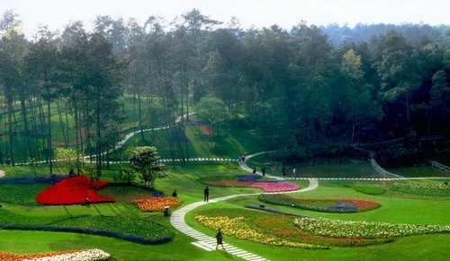
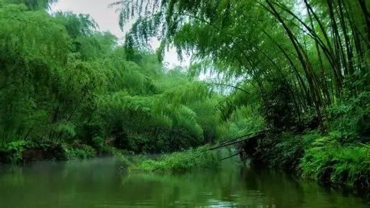
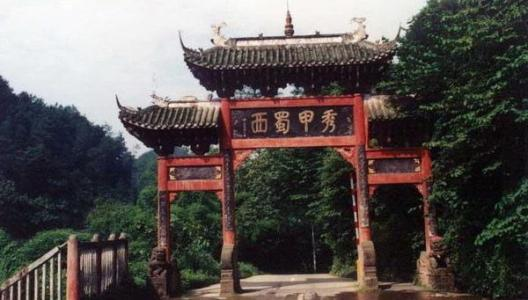
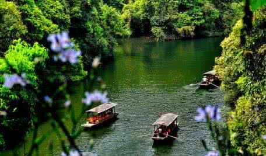

大美蒲江，生态绿色
国家AAAA级景区
成都市最美绿化带
设为首页
联系我们
-

白鹭湾景区当地过路的村民们还向我们介绍一个传说，杨老说，这个传说流传了几代人，两百多年前在修建仙鹤桥的时候，工人们怎么都搬不动那块巨石，忽然飞来一只白鹤站在上面，这块石头竟然能搬动了，后来为了纪念这只白鹤，这座桥便取名为“仙鹤桥”。 这座近10米长的石桥横跨在荷花村一条7米宽的小河沟上，由于近期连日高温，河沟里的水势并不大，“仙鹤桥”就架在两岸的基石上，听当地人介绍，这座桥修建于1776年，两百多年间，这条河沟也多次发过大水，但桥身并没有被冲毁，“可能因为桥身是一整块石头吧。”石板桥看上去有一些破旧的痕迹，但桥身依然十分牢固，荷花村3000多村民每天都要从这里进出。
-

长滩湖景区当地过路的村民们还向我们介绍一个传说，杨老说，这个传说流传了几代人，两百多年前在修建仙鹤桥的时候，工人们怎么都搬不动那块巨石，忽然飞来一只白鹤站在上面，这块石头竟然能搬动了，后来为了纪念这只白鹤，这座桥便取名为“仙鹤桥”。 这座近10米长的石桥横跨在荷花村一条7米宽的小河沟上，由于近期连日高温，河沟里的水势并不大，“仙鹤桥”就架在两岸的基石上，听当地人介绍，这座桥修建于1776年，两百多年间，这条河沟也多次发过大水，但桥身并没有被冲毁，“可能因为桥身是一整块石头吧。”石板桥看上去有一些破旧的痕迹，荷花村3000多村民每天都要从这里进出。
-

石象湖景区当地过路的村民们还向我们介绍一个传说，杨老说，这个传说流传了几代人，两百多年前在修建仙鹤桥的时候，工人们怎么都搬不动那块巨石，忽然飞来一只白鹤站在上面，这块石头竟然能搬动了，后来为了纪念这只白鹤，这座桥便取名为“仙鹤桥”。 这座近10米长的石桥横跨在荷花村一条7米宽的小河沟上，由于近期连日高温，河沟里的水势并不大，“仙鹤桥”就架在两岸的基石上，听当地人介绍，这座桥修建于1776年，两百多年间，这条河沟也多次发过大水，但桥身并没有被冲毁，“可能因为桥身是一整块石头吧。”石板桥看上去有一些破旧的痕迹，荷花村3000多村民每天都要从这里进出。
-

朝阳湖景区当地过路的村民们还向我们介绍一个传说，杨老说，这个传说流传了几代人，两百多年前在修建仙鹤桥的时候，工人们怎么都搬不动那块巨石，忽然飞来一只白鹤站在上面，这块石头竟然能搬动了，后来为了纪念这只白鹤，这座桥便取名为“仙鹤桥”。 这座近10米长的石桥横跨在荷花村一条7米宽的小河沟上，由于近期连日高温，河沟里的水势并不大，“仙鹤桥”就架在两岸的基石上，听当地人介绍，这座桥修建于1776年，两百多年间，这条河沟也多次发过大水，但桥身并没有被冲毁，“可能因为桥身是一整块石头吧。”石板桥看上去有一些破旧的痕迹，荷花村3000多村民每天都要从这里进出。
-

平乐景区当地过路的村民们还向我们介绍一个传说，杨老说，这个传说流传了几代人，两百多年前在修建仙鹤桥的时候，工人们怎么都搬不动那块巨石，忽然飞来一只白鹤站在上面，这块石头竟然能搬动了，后来为了纪念这只白鹤，这座桥便取名为“仙鹤桥”。 这座近10米长的石桥横跨在荷花村一条7米宽的小河沟上，由于近期连日高温，河沟里的水势并不大，“仙鹤桥”就架在两岸的基石上，听当地人介绍，这座桥修建于1776年，两百多年间，这条河沟也多次发过大水，但桥身并没有被冲毁，“可能因为桥身是一整块石头吧。”石板桥看上去有一些破旧的痕迹，荷花村3000多村民每天都要从这里进出。
湖内有石象寺，坐姿15米的“川西大佛”，另有紫燕岩、水鸟湾、茯苓 湾、珠 岛、青龙岛、弓沟、娃娃沟、二龙戏珠等景点。景区的森林覆盖率达90%以 上，其绝佳的自然生态犹如一块翡翠镶嵌在成都平原上。几年来，去过石象湖的人 ，仁者，智者，各抒己见，视角不同，感触各异。有的讲石象湖是“鲜花的海洋， 视界的天堂”，有的说石象湖是“东方小瑞士，亚洲小荷兰，中国达沃斯，成都御 花园”，还有人将石象湖美誉为“梦幻之地、安逸之乡、人居天堂”。
蒲江热门景区推荐
票价：15元/人
票价：10元/人
票价：15元/人
蒲江旅游景区名
石象湖、朝阳湖、西部茶都、九连山生态园、石象寺、九仙山、明月村、光明乡、李家钰故里